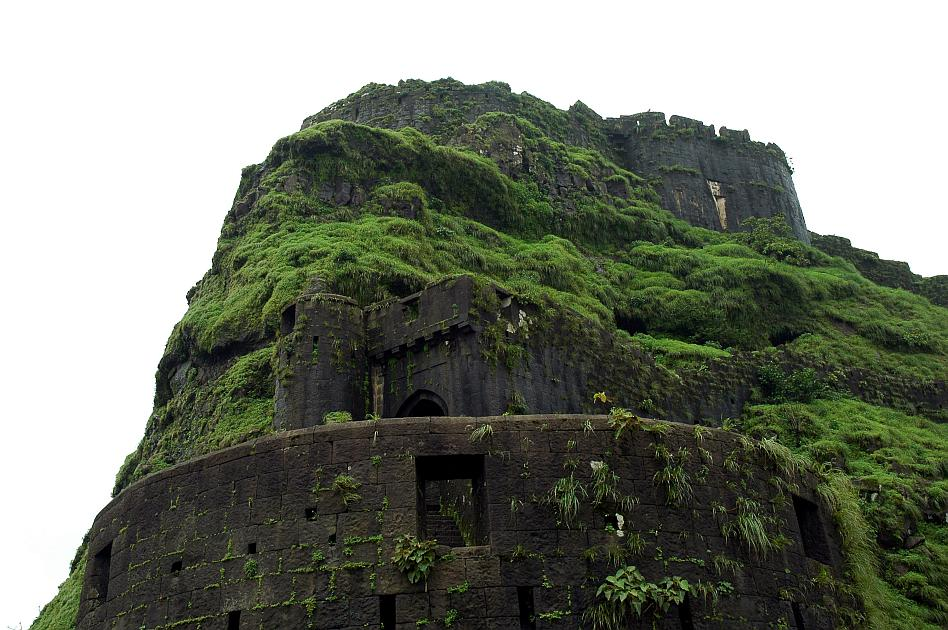

Location/Region: Malavli (Lonavala)
Difficulty: Easy
Elevation: 3,400 feet (1,036 meters)
Lohagad, meaning "Iron Fort" in Marathi, is a majestic hill fort that once served as a military base of Shivaji Maharaj. It is one of the most well-preserved and accessible forts in Maharashtra, making it a favorite for families, students, and first-time trekkers.
The trek begins from Malavli railway station, and you can either hike or drive halfway to the Lohagadwadi village, which is the base. From here, well-built stone steps lead directly to the top. The fort offers a perfect blend of nature and history, especially during monsoon, when the entire area is carpeted in lush greenery.
 ← Back to Home